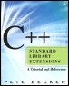

|  |
| ||||||||||||||||||||||||||||
| Table of Contents | Index |
 |
"TR1 roughly doubles the size of the C++ standard library, and it introduces many new facilities and even new kinds of library components. TR1 has some classes, for example, where some nested types may or may not exist depending on the template arguments. To programmers whose experience stops with the standard library, this is strange and unfamiliar. This book is complete (it covers all TR1 facilities), it is easier to understand than TR1 itself, and it is technically accurate." --Matthew Austern,software engineer, Google "TR1 will help make the C++ programmer more productive than ever. In this book, Pete Becker has written the ultimate reference guide to these components, what they are, how they work, and what they're used for. This book should be on the bookshelf of anyone who wants to use these standardized components to improve both their productivity as well as their coding quality." --John Maddock, consultant and programmer The current C++ standard library extends the core C++ language with common classes and functions. In recent years, to address limitations in that library, a number of components have been developed to extend the language even further. Compiled in a comprehensive technical report (TR1), the bulk of these extensions have been approved for the next revision of the C++ standard. In this book, Pete Becker describes in detail each component in the TR1 library, explaining new facilities for utilities, containers, call wrappers, type traits, numerics, regular expressions, and C compatibility. He draws on his own experience implementing these components to illustrate their value, clarifying the specifications when necessary and providing complete, tested code examples. Most chapters include exercises of various degrees of difficulty to help programmers get hands-on practice with the new components. Answers to the exercises, along with all code examples, are available on the Web. Appendixes comprise a summary of headers included in or extended by the TR1 library, as well as guidelines on how to use the components safely in multithreaded applications. The C++ Standard Library Extensions is for any programmer who wants to get a jump on the revised standard. It also makes the perfect companion to The C++ Standard Library, by Nicolai Josuttis, both books being tutorials and references essential for using C++ more effectively. |